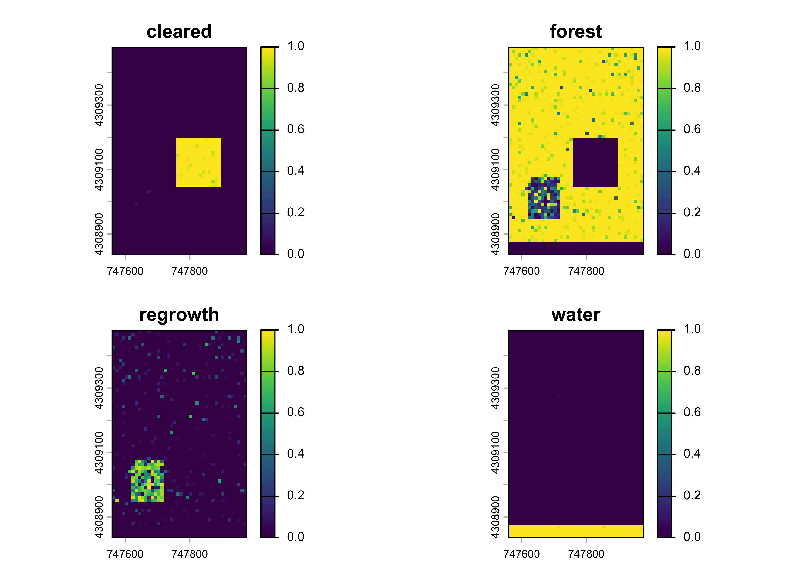
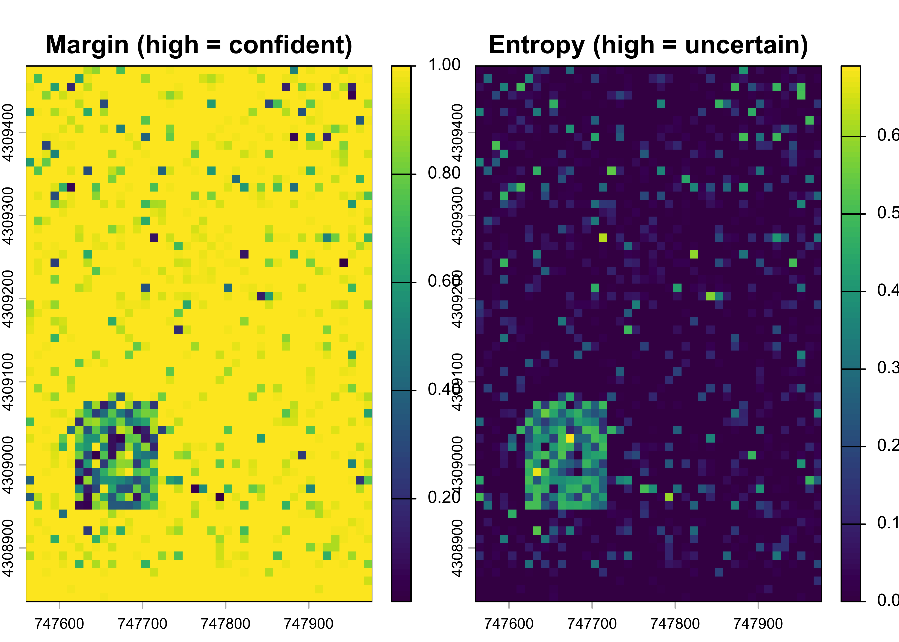
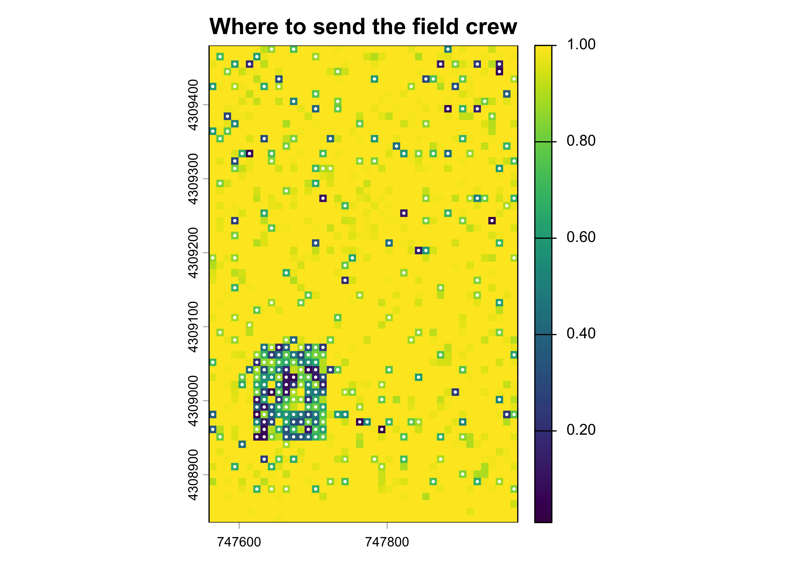

library(terra)
library(sf)
library(ranger)
stems <- st_as_sf(read.csv("data/scbi_stems.csv"),
coords = c("lon", "lat"), crs = 4326) |>
st_transform(32617)
r <- rast(ext(vect(stems)), resolution = 10, crs = "EPSG:32617")
xy <- xyFromCell(r, 1:ncell(r))
set.seed(42)
cls <- rep("forest", ncell(r))
cls[xy[,1] > 747760 & xy[,1] < 747900 & xy[,2] > 4309050 & xy[,2] < 4309200] <- "cleared"
cls[xy[,1] > 747620 & xy[,1] < 747720 & xy[,2] > 4308950 & xy[,2] < 4309080] <- "regrowth"
cls[xy[,2] < 4308880] <- "water"
# simulated reflectance: forest and regrowth deliberately overlap
mu <- list(forest = c(0.04, 0.06, 0.32, 0.18),
regrowth = c(0.05, 0.08, 0.28, 0.22),
cleared = c(0.12, 0.16, 0.20, 0.30),
water = c(0.03, 0.04, 0.02, 0.01))
sd_ <- c(0.012, 0.014, 0.030, 0.025)
bands <- sapply(1:4, function(b) {
v <- numeric(ncell(r))
for (k in names(mu)) { i <- cls == k; v[i] <- rnorm(sum(i), mu[[k]][b], sd_[b]) }
v
})
img <- rast(r, nlyrs = 4); values(img) <- bands
names(img) <- c("blue", "green", "nir", "swir")
truth <- rast(r); values(truth) <- as.integer(factor(cls))
round(100 * table(cls) / ncell(r), 1)
#> cls
#> cleared forest regrowth water
#> 7.8 81.1 4.8 6.29 Activity Data and Classification
9.1 The extent term
The emission factors chapter dealt with the greenhouse gas consequence per hectare. This chapter deals with the hectares. Activity data is the extent and location of whatever the factor is being applied to: land deforested, land converted, land brought under a new management regime. It is the term spatial analysis is actually for.
It is also the term most likely to be produced by a classification, and therefore the term that inherits a classifier’s errors. The disturbance chapter built a two-class change map and validated it. Real activity data is rarely two classes, the classes of interest are usually rare, and both of those facts change the problem in ways that a binary example conceals.
9.2 Three approaches
The IPCC distinguishes three ways of collecting activity data, and the distinction is about spatial explicitness rather than accuracy of measurement (IPCC, 2006).
Approach 1 uses aggregate area statistics: how much cropland, how much forest, at two points in time. It gives net change and cannot say what became what.
Approach 2 adds transition information: how much forest became cropland, tracked as a matrix, but without locating the transitions.
Approach 3 is spatially explicit: every parcel or pixel carries its own land-use trajectory, so transitions are located as well as counted.
Only Approach 3 supports the parcel-level transition clocks that the emission factors chapter showed are necessary to avoid double counting across overlapping interventions, and only Approach 3 lets you stratify emission factors by anything you can map. It is also the only one that produces a classification, and therefore the only one with classification error to worry about. That is not a drawback. Approaches 1 and 2 have the same errors; they simply have no mechanism for measuring them.
9.3 A scene to classify
We build a four-class scene over the plot footprint: forest, a cleared block, a patch of regrowth, and water along the southern edge. Four spectral bands are simulated with deliberate overlap between forest and regrowth, because that is where real classifiers fail and a scene with separable classes teaches nothing.
Regrowth covers under five per cent of the scene. That is the situation activity data is almost always in: the class you are being paid to detect is the rare one, and the class that dominates the accuracy statistics is the one nobody is asking about.
9.4 Training design and the rare-class trap
The obvious way to collect training data is to sample the scene at random, which gives each class a share proportional to its area.
fit_and_assess <- function(idx, label) {
tr <- data.frame(cover = factor(cls[idx]), bands[idx, ])
names(tr)[-1] <- names(img)
f <- ranger(cover ~ ., data = tr, probability = TRUE, num.trees = 300, seed = 1)
pp <- terra::predict(img, f, na.rm = TRUE,
fun = function(m, d) predict(m, d)$predictions)
hard <- max.col(as.matrix(pp))
cm <- table(map = levels(factor(cls))[hard], ref = cls)
ua <- diag(cm) / rowSums(cm); pa <- diag(cm) / colSums(cm)
data.frame(design = label,
overall = round(100 * mean(hard == values(truth)), 1),
regrowth_UA = round(ua[["regrowth"]], 3),
regrowth_PA = round(pa[["regrowth"]], 3),
VM0048 = ifelse(ua[["regrowth"]] >= 0.7 & pa[["regrowth"]] >= 0.7,
"pass", "fail"))
}
set.seed(7)
prop300 <- fit_and_assess(sample(ncell(r), 300), "proportional, n = 300")
prop300
#> design overall regrowth_UA regrowth_PA VM0048
#> 1 proportional, n = 300 97.2 0.886 0.477 failNinety-seven per cent overall accuracy, which in a project report would look like a finished job. The class-level figures say otherwise: the map catches under half of the real regrowth. Overall accuracy is dominated by forest, which is 81 per cent of the scene and easy, so it tells you almost nothing about the class you care about.
This is why the standards require class-level accuracies rather than an overall figure, and why they require both user’s and producer’s accuracy to clear the threshold. A single number can always be gamed by a class that is common and easy.
9.5 Why reweighting does not rescue it
The standard response is to stratify: sample equally from each class so the rare one is properly represented. Compare four designs, holding the classifier fixed.
strat <- function(n) unlist(lapply(split(seq_len(ncell(r)), cls),
function(i) sample(i, min(length(i), n))))
set.seed(7)
results <- rbind(
prop300,
fit_and_assess(strat(75), "stratified, 75 per class"),
fit_and_assess(strat(300), "stratified, 300 per class"),
fit_and_assess(sample(ncell(r), 1200), "proportional, n = 1200"))
knitr::kable(results, row.names = FALSE)| design | overall | regrowth_UA | regrowth_PA | VM0048 |
|---|---|---|---|---|
| proportional, n = 300 | 97.2 | 0.886 | 0.477 | fail |
| stratified, 75 per class | 88.5 | 0.289 | 0.938 | fail |
| stratified, 300 per class | 96.4 | 0.579 | 0.931 | fail |
| proportional, n = 1200 | 98.4 | 0.939 | 0.708 | pass |
Stratifying does exactly what it promises and not what was wanted. Producer’s accuracy for regrowth climbs above 0.9, because the classifier now finds the class. User’s accuracy collapses, because it now finds it everywhere, including where it is not. Omission has been traded for commission at close to a one-for-one rate, and overall accuracy has fallen.
Only the last row passes. What fixed it was not a cleverer allocation of the sample but four times as much of it. That is an unwelcome result, because reweighting is free and fieldwork is not, and it is worth stating plainly: when a rare class is spectrally confusable, sampling design redistributes the error rather than reducing it. Reducing it takes more information, either more training data or better features.
The dual threshold in the standards exists precisely to prevent the trade. A project may not buy producer’s accuracy with user’s accuracy, because a map that over-calls deforestation is as unusable as one that misses it, just in the opposite fiscal direction.
9.6 Probability surfaces
A classifier that returns only a label discards most of what it knows. Asking for probabilities gives a surface per class, and the shape of those surfaces is where the useful diagnostics live.
set.seed(7)
idx <- sample(ncell(r), 1200)
tr <- data.frame(cover = factor(cls[idx]), bands[idx, ])
names(tr)[-1] <- names(img)
fit <- ranger(cover ~ ., data = tr, probability = TRUE, num.trees = 300, seed = 1)
prob <- terra::predict(img, fit, na.rm = TRUE,
fun = function(m, d) predict(m, d)$predictions)
names(prob) <- levels(tr$cover)
plot(prob, range = c(0, 1))
Two summaries turn the four surfaces into one uncertainty layer. The margin is the difference between the highest and second-highest class probability: it is small where two classes compete. Entropy, normalised to a maximum of one, is small where the classifier is confident in any single class and large where probability is spread.
pm <- as.matrix(prob)
top2 <- t(apply(pm, 1, function(x) sort(x, decreasing = TRUE)[1:2]))
margin <- top2[, 1] - top2[, 2]
entropy <- -rowSums(pm * log(pmax(pm, 1e-12))) / log(ncol(pm))
unc <- rast(r, nlyrs = 2); values(unc) <- cbind(margin, entropy)
names(unc) <- c("margin", "entropy")
plot(unc, main = c("Margin (high = confident)", "Entropy (high = uncertain)"))
Uncertainty is not spread evenly. It concentrates along class boundaries, where a pixel genuinely contains two covers, and across the regrowth patch, where the spectral overlap with forest was built in. That spatial structure is the point: it tells you where the map is weak, which a single accuracy figure never can.
hard <- max.col(pm)
correct <- hard == values(truth)
round(c(margin_when_correct = mean(margin[correct]),
margin_when_wrong = mean(margin[!correct])), 3)
#> margin_when_correct margin_when_wrong
#> 0.956 0.543
round(100 * sum(!correct & margin <= quantile(margin, 0.1)) / sum(!correct), 1)
#> [1] 77.8Correct pixels carry a mean margin close to twice that of incorrect ones, and more than three quarters of all errors fall in the lowest-margin tenth of the scene. The margin is therefore a usable predictor of error without any reference data at all, which is what makes the next step possible.
9.7 Spending the next field day well
If errors concentrate where the margin is low, then the most informative place to collect another training point is where the classifier is least sure. This is active learning, and in an operational setting it is the difference between a validation campaign that improves the map and one that merely measures it.
candidates <- order(margin)[1:300]
cand_xy <- xy[candidates, ]
plot(rast(r, vals = margin), main = "Where to send the field crew")
points(cand_xy, pch = 19, cex = 0.25, col = "white")
The three hundred least-certain pixels are heavily enriched in regrowth relative to its share of the scene. A crew sent to those locations returns labels for the class the map is failing on, which is exactly what a proportional random sample would not have delivered. Note that these points are useful for training and are not a valid basis for accuracy assessment: a sample chosen because it is difficult is not representative, and using it to estimate accuracy would understate the map’s quality. Accuracy needs a probability sample, which is the subject of the uncertainty chapter.
What VM0048 requires of a map
Verra’s activity data module sets class-level thresholds rather than an overall accuracy figure, and the reasoning is the one demonstrated above.
For a jurisdictional forest cover benchmark map, user’s and producer’s accuracy must each be 70 per cent or greater for areas mapped as deforestation over the historical reference period, and each greater than 90 per cent for areas mapped as forest at the end of that period. Where it is demonstrated that half or more of the jurisdiction’s forest carries under 50 per cent canopy cover, those thresholds relax to 60 and 80 per cent respectively.
A minimum of 100 sample observations should be made of the target and non-target classes, so at least 200 per estimate, following the same interpretation protocol used to develop the activity data in the first place.
Resolution is prescribed too, and asymmetrically: the wall-to-wall benchmark map must be at 30 m or finer and must not exceed 30 m, while imagery interpreted inside sample plots must be 10 m or finer. The split follows from the map not being the estimator. Under VM0048 the area comes from the probability sample and the map only stratifies it, which is the same argument the uncertainty chapter makes when it adjusts a mapped area against a reference sample.
Sources: VMD0055 v1.1, accuracy assessment of the jurisdictional FCBM.
The operational stack
Production activity data work is rarely done with a raster and a random forest in memory. The sits package organises satellite time series into regularised data cubes and runs classification over them, with the training-sample tooling that large multi-class problems need (Simões et al., 2021). The code below is the shape of that workflow. It is not executed here, because the book renders offline and the dependency stack is heavy, but it maps one-to-one onto the steps above.
library(sits)
# a regularised cube, rather than a single-date image
cube <- sits_cube(source = "MPC", collection = "SENTINEL-2-L2A",
roi = roi, start_date = "2022-01-01", end_date = "2022-12-31")
reg <- sits_regularize(cube, period = "P16D", res = 10, output_dir = tempdir())
# spectral indices as additional cube bands
reg <- sits_apply(reg, NDVI = (B08 - B04) / (B08 + B04), output_dir = tempdir())
# training samples carry a full time series per point, not one observation
samples <- sits_get_data(reg, samples = training_points)
# self-organising map to find and drop mislabelled samples
som <- sits_som_map(samples)
clean <- sits_som_clean_samples(som)
# class imbalance handled explicitly rather than by resampling pixels
bal <- sits_reduce_imbalance(clean, n_samples_over = 200, n_samples_under = 400)
model <- sits_train(bal, sits_rfor())
probs <- sits_classify(reg, model, output_dir = tempdir())
# Bayesian smoothing over the probability cube before labelling
sm <- sits_smooth(probs, output_dir = tempdir())
map <- sits_label_classification(sm, output_dir = tempdir())
# per-pixel uncertainty, then active learning on the worst pixels
unc <- sits_uncertainty(sm, type = "margin", output_dir = tempdir())
new <- sits_uncertainty_sampling(unc, n = 300, min_uncert = 0.4, sampling_window = 10)Three things in that sequence do not appear in the in-memory version above and are worth knowing about. sits_som_clean_samples() finds training points whose spectra are inconsistent with their label, which catches interpretation errors before they poison the model. sits_reduce_imbalance() addresses the rare-class problem at the sample level with explicit over- and under-sampling targets. And sits_smooth() applies Bayesian smoothing to the probability cube before labelling, which suppresses isolated misclassified pixels while preserving real edges, a step with no equivalent in the hard-label workflow.
9.8 Exercises
- Change the regrowth spectral means to be more distinct from forest, for instance by raising the near-infrared value, and rerun the four training designs. At what point does the proportional design at n = 300 pass the VM0048 thresholds, and what does that tell you about the relative value of better features against more samples?
- Compute the confusion matrix for the n = 1200 proportional design and report all four classes’ user’s and producer’s accuracies. Which class pair accounts for nearly all of the remaining error?
- Replace the margin with entropy as the active-learning criterion and compare the class composition of the 300 selected pixels. Do the two criteria disagree, and where?
- Using the area-adjusted estimator from the uncertainty chapter, compute the adjusted area of regrowth and its confidence interval under both the proportional and stratified designs. Which design gives the tighter interval, and is it the one with the higher overall accuracy?
- The active-learning sample is explicitly not valid for accuracy assessment. Design a sampling scheme that serves both purposes, or explain in one paragraph why one cannot.
- (Applied.) A jurisdiction reports a benchmark map with 94 per cent overall accuracy, deforestation user’s accuracy of 0.81 and producer’s accuracy of 0.62. State whether it meets VM0048, what the failure implies about the direction of bias in the reported area, and what you would ask the proponent to do next.